Manaslu Circuit Trek
The Manaslu Circuit Trek is a high-altitude Himalayan trekking journey centered on Mount Manaslu, the world's eighth-highest mountain at 8,163 m. The route connects the deep river gorges of the Budhi Gandaki Valley with the alpine Marsyangdi Valley over Larkya La Pass (5,106 m), creating a complete wilderness circumnavigation through untouched Tibetan Buddhist Nubri communities.
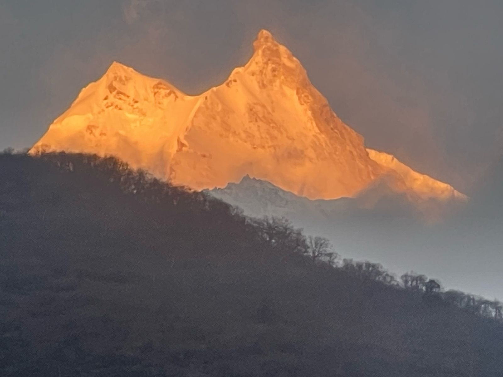
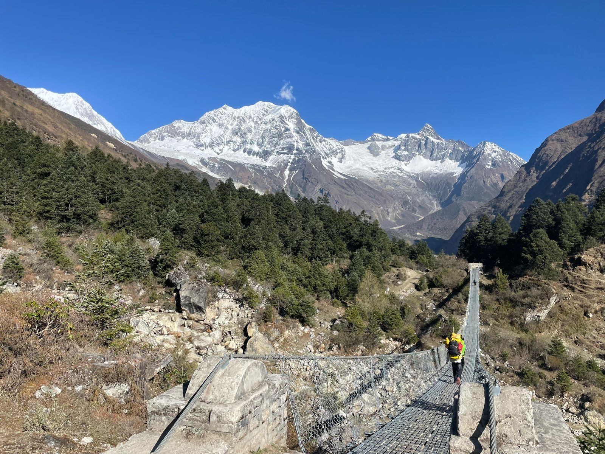
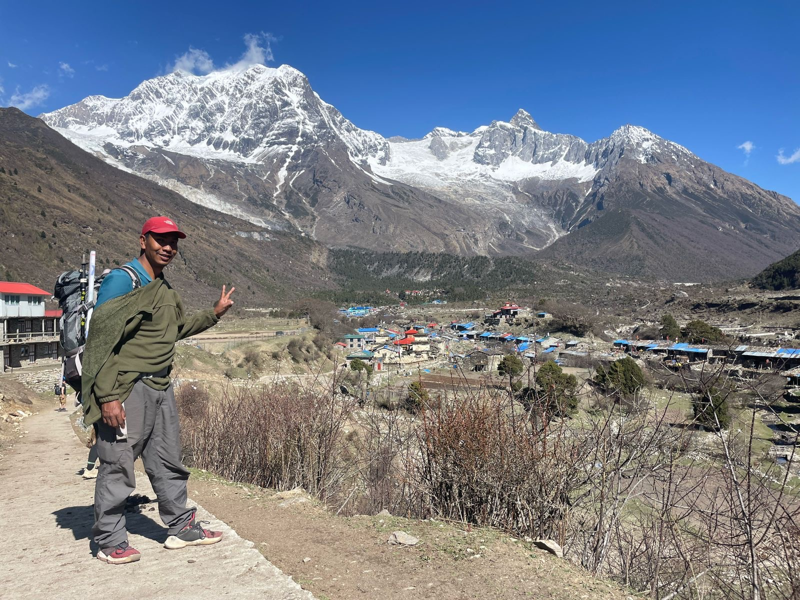
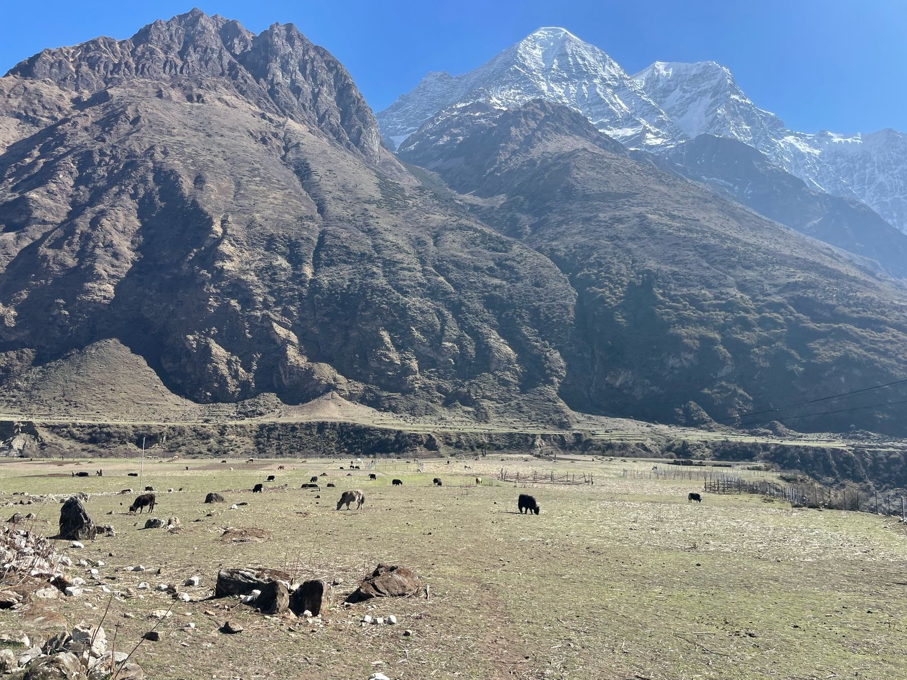
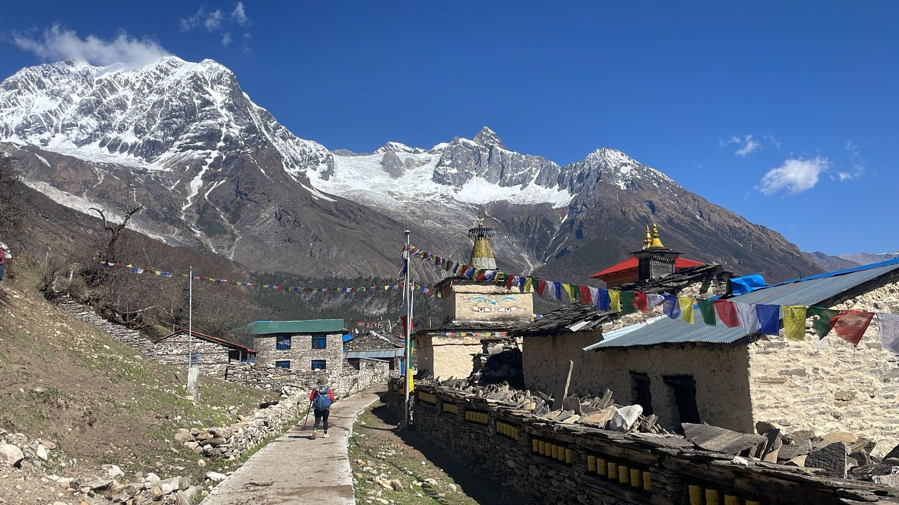
Key Trip Facts
Manaslu Circuit Trek Overview
The Manaslu Circuit Trek is a premier high-altitude Himalayan trekking journey centered on Mount Manaslu, the world's eighth-highest mountain at 8,163 m. The journey follows the remote, culturally pristine mountain landscapes of northern Gorkha, connecting the deep river canyons of the Budhi Gandaki Valley with the alpine Marsyangdi Valley over the formidable 5,106 m Larkya La Pass. This creates a true wilderness circumnavigation rather than an out-and-back trek.
Our 14-day itinerary has fourteen route days from the Kathmandu road departure to the Kathmandu return. Samagaon (3,530 m) and Samdo (3,860 m) feature dedicated acclimatization stays, while Dharamsala at approximately 4,460 m is the highest scheduled overnight before crossing Larkya La during daytime. The route combines staggering mountain scenery, traditional Tibetan Buddhist Nubri heritage, active wildlife sanctuaries, and five distinct ecological transitions.
What the Manaslu Circuit Experience is Like
The Manaslu Circuit is ideally suited to travelers seeking a multi-day Himalayan expedition with substantial changes in landscape, climate, and altitude. Instead of concentrating on one singular viewpoint, the trek moves through continuously evolving environments: lower river valleys with sub-tropical farmland and roaring waterfalls give way to ancient fir and oak woodlands, opening further into Tibetan-style stone villages and glaciated alpine cirques.
Mount Manaslu as the Centerpiece
Rising to 8,163 m (26,781 ft), Mount Manaslu—meaning 'Mountain of the Spirit' in Sanskrit—is the defining geographic presence of the region. The trekking trail circumnavigates the massif through surrounding valleys and settlements rather than climbing the mountain itself, offering changing perspectives of its twin summits from Lho, Samagaon, and high mountain ridges.
Cultural Heritage of Upper Nubri
As elevation rises above 2,500 m, you enter the Nubri cultural region, populated by Tibetan-descent mountain communities who have preserved their Buddhist heritage for centuries. Intricately carved mani stone walls, chortens, spinning prayer wheels, and active monasteries like Ribung Gompa in Lho and Pungyen Gompa above Samagaon are integral parts of the trail, encountered as living cultural communities rather than museum sights.
Signature Trip Highlights
Circumnavigation of Mount Manaslu (8,163 m)
Rather than an out-and-back route, you complete a continuous 360-degree circumnavigation of the world's eighth-highest mountain, admiring its imposing double-peaked summit from lower river canyons, high glacial cirques, and alpine pastures.
Crossing the Dramatic Larkya La Pass (5,106 m)
The pinnacle stage of the circuit leads across the high moraines of Larkya Glacier to the prayer-flag strewn summit of Larkya La at 5,106 m, unveiling breathtaking panoramic vistas of Himlung Himal, Cheo Himal, Kang Guru, and Annapurna II.
Living Tibetan Buddhist Culture in Nubri
Immerse yourself in authentic ancient Buddhist culture across Namrung, Lho, and Samagaon. Walk past intricately carved centuries-old mani walls, spinning prayer wheels, and historic monasteries like Ribung Gompa and Pungyen Gompa.
Two Dedicated Acclimatization Hubs
A safe altitude progression featuring scheduled multi-night acclimatization stays at Samagaon (3,530 m) and Samdo (3,860 m). Take active side hikes toward Birendra Glacier Lake and the ancient Tibetan trading trail before tackling the high pass.
Deep River Gorges & Suspension Bridges
Experience the thrilling engineering of the Budhi Gandaki corridor, crossing towering suspension bridges suspended hundreds of feet above churning glacial torrents, alongside cascading waterfalls and sheer cantilevered cliff walkways.
Ecological Transitions Across Five Climatic Zones
Witness extraordinary natural biodiversity as the trail ascends from subtropical river valleys, terrace farmlands, and lush rhododendron-oak forests through subalpine pine zones into stark, barren high-altitude arctic moraines.
Manaslu Circuit Trek Itinerary: Day by Day Details
Our 14-day Manaslu Circuit Trek itinerary is expertly balanced around gradual elevation gain, dual acclimatization hubs at Samagaon and Samdo, and a daytime crossing of Larkya La Pass (5,106 m). Review the stage details, walking hours, distances, and overnight teahouse locations below.
Day 1: Drive from Kathmandu to Machha Khola via Dhading Besi & Arughat
Scenic Mountain Highway & River Valley Road Corridor – 1,400 m down to 900 m
Your 14-day Manaslu Circuit journey begins with an early morning scenic drive from Kathmandu. Leaving the capital behind, the route travels west along the paved Prithvi Highway following the Trishuli River before turning north at Malekhu towards Dhading Besi. From Dhading, the road transitions into a rugged mountain track winding through rural hill settlements, terraced farmlands, and green subtropical valleys down to Arughat on the banks of the Budhi Gandaki River. Continuing upstream along the river corridor, we arrive at Machha Khola (Fish Stream) at approximately 900 m. This low starting elevation provides an ideal baseline for the gradual altitude progression that will unfold over the coming two weeks.
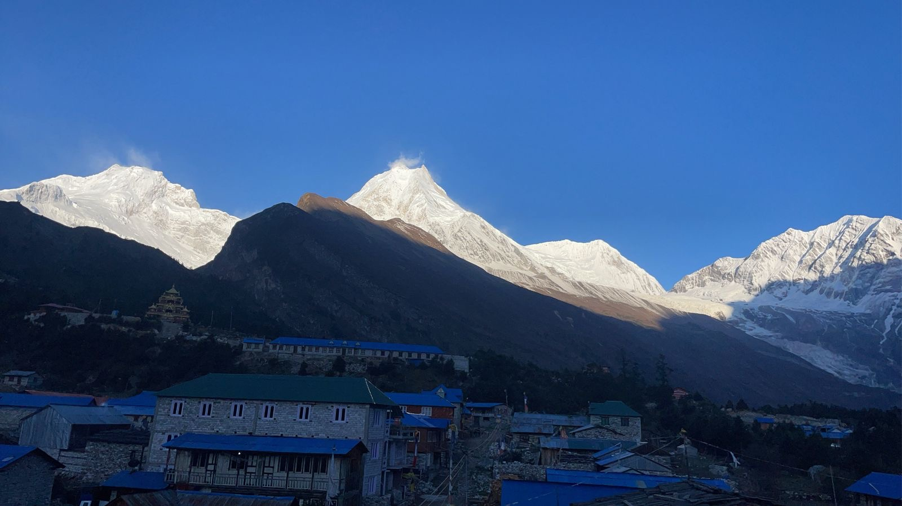
Overland Mountain Road Journey Leading to Machha Khola TrailheadDay 2: Trek from Machha Khola to Jagat via Khorlabesi & Tatopani
Lower Budhi Gandaki River Gorge & Natural Hot Springs – 1,340 m (4,396 ft)
Today marks your first full day on foot following the dramatic Budhi Gandaki Valley. The trail begins with undulating stone staircases, crossing small streams and passing through the terraced fields of Khorlabesi. A short climb brings us to Tatopani ('hot water' in Nepali), where natural hot mineral water spouts flow from the rocky cliffs beside the trail. We cross a suspension bridge over the torrential river, climb a wide staircase over a rocky ridge toward Dovan, and navigate riverside gravel paths and cantilevered sections. The gorge begins to narrow noticeably as we approach Jagat at 1,340 m, a beautifully clean, stone-paved village featuring the first official conservation and police checkpoint where your restricted area permits are verified.
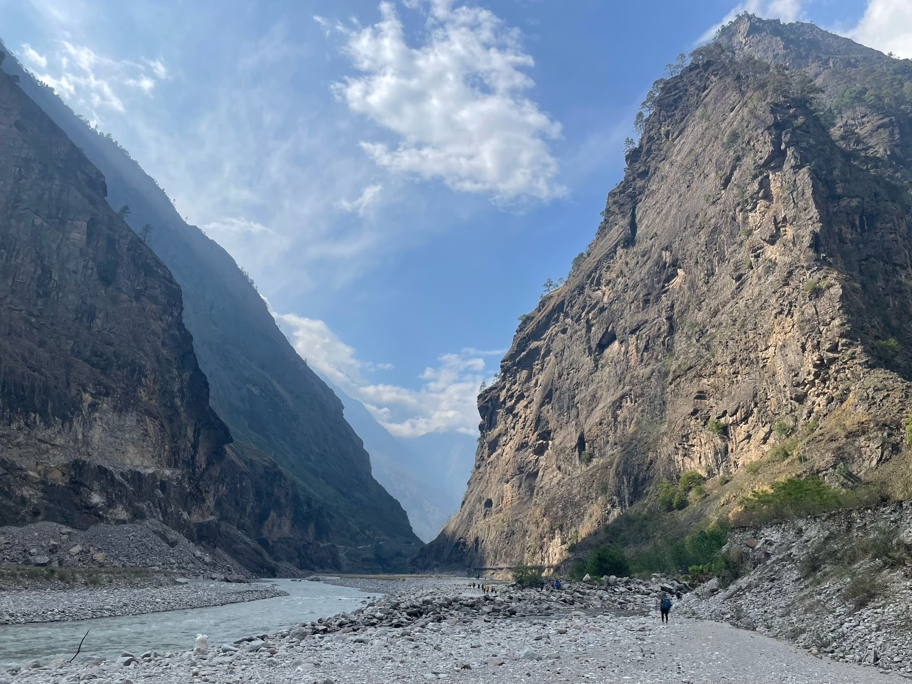
Trekkers traversing the rugged riverside canyon of the Budhi GandakiDay 3: Trek from Jagat to Deng via Philim & Pewa
Pine Forests, Deep Gorges & Entry to Buddhist Culture – 1,860 m (6,102 ft)
Leaving Jagat, we ascend over a rocky spur to Salleri, offering expansive views of Sringi Himal (7,187 m). We descend to Sirdibas, an ancient Gurung settlement where traditional stone houses and drying corn cobs line the paths. Crossing a dramatic long suspension bridge to the eastern bank, we climb steeply up to Philim (1,570 m), the largest and most prosperous administrative village of the lower valley with its prominent secondary school and Japanese-assisted health post. Beyond Philim, the trail enters a dramatically narrow gorge where the river thunders through sheer rock clefts. We cross and recross the Budhi Gandaki over high suspension bridges, pass through bamboo groves at Ekle Bhatti and Pewa, and make a steady ascent to Deng (1,860 m), where the first glimpses of Tibetan Buddhist culture become visible.
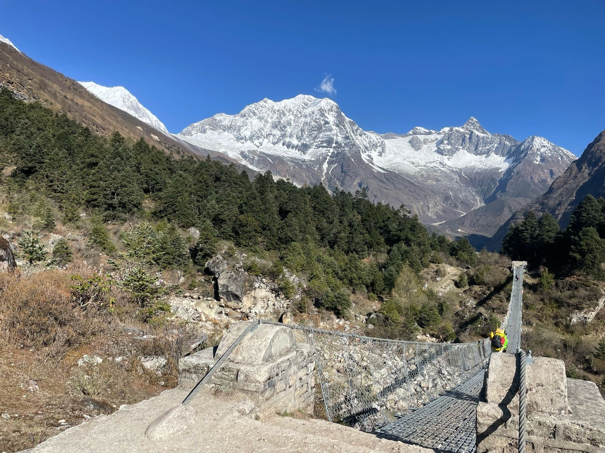
High Steel Suspension Bridge crossing deep river gorge near PhilimDay 4: Trek from Deng to Namrung via Ghap
Himalayan Forest Ascent & Gateway to Upper Nubri – 2,630 m (8,628 ft)
Today's trek is one of the most culturally and ecologically significant transition stages on the circuit. Shortly after Deng, we cross the Budhi Gandaki once more and ascend steadily through pristine forests of rhododendron, bamboo, and Himalayan pine. The trail passes Rana and Bihi Phedi before reaching Ghap (2,160 m), where beautiful Tibetan Buddhist mani stones carved with intricate prayers and deities adorn the village entrance. Entering the territory of Upper Nubri, the local dialect, architecture, and dress shift distinctly toward Tibetan traditions. A steep, continuous climb through fragrant fir and oak woodlands alive with Himalayan monal pheasants brings us to Namrung (2,630 m), an important trading post with stone-paved streets, ancient archways (Kani), and viewpoints toward Ganesh Himal.
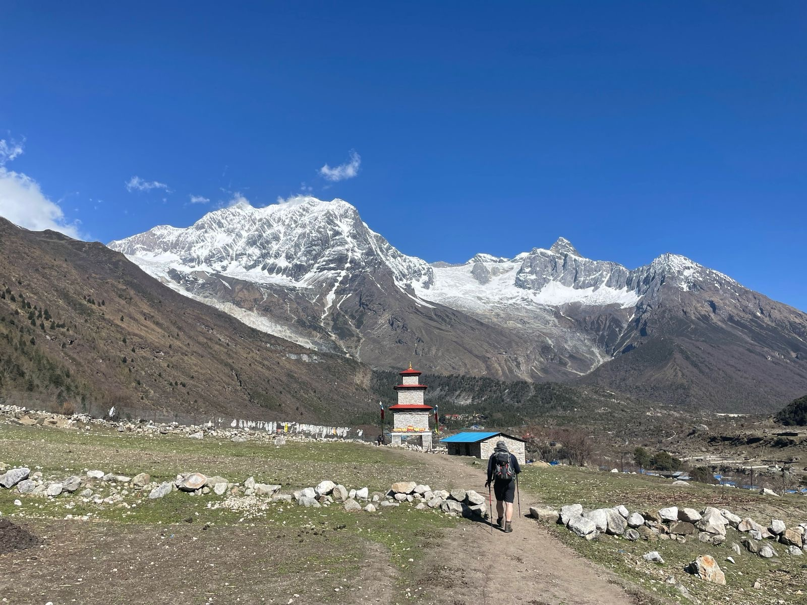
Lush rhododendron and pine forest slopes surrounding upper Manaslu settlementsDay 5: Trek from Namrung to Lho via Lihi & Sho
First Views of Mount Manaslu & Ribung Gompa – 3,180 m (10,433 ft)
A shorter, highly rewarding walking stage that brings you face-to-face with Mount Manaslu for the very first time. Leaving Namrung, we climb through lush alpine forests to Lihi (2,900 m), famous for its ancient terraced barley fields and traditional flat-roofed stone houses clustered together. Continuing past Sho (2,960 m), the valley opens broadly to reveal breathtaking panoramas of Simnang Himal and Manaslu North. An easy ascent leads into Lho (3,180 m), dominated by the sprawling hillside complex of Ribung Gompa. Here, hundreds of young monks study Buddhist philosophy under the towering gaze of Mount Manaslu's majestic double peak. The golden afternoon light across the monastery's prayer flags and Manaslu's icy summit is one of the photographic highlights of the trek.
Day 6: Trek from Lho to Samagaon via Shyala
Glacial Valleys, Ancient Mani Walls & Nubri Capital – 3,530 m (11,581 ft)
We start early to catch the sunrise glowing pink and gold on Manaslu from Lho. The trail descends through alpine larch and rhododendron woodlands to the riverbed, crosses a wooden bridge, and climbs steadily up to Shyala (3,500 m). Shyala is surrounded by a 360-degree amphitheater of giant Himalayan peaks: Himal Chuli and Peak 29 (Ngadi Chuli) to the left, Manaslu directly ahead, and large glaciers tumbling down rock faces. From Shyala, the trail descends gently toward a wide, open glacial plain where yaks graze on alpine meadows. We cross the stream draining Manaslu Glacier and enter Samagaon (3,530 m), the bustling cultural capital of the Nubri Valley, characterized by sprawling stone houses, extensive mani walls, and vibrant monastery courtyards.
Day 7: Acclimatization & Exploration Day at Samagaon
Active Side Hike to Birendra Lake or Pungyen Gompa – 4,050 m (13,287 ft)
Today is a vital scheduled acclimatization day that strictly adheres to the proven mountaineering rule: 'Climb high, sleep low'. Staying active at this elevation accelerates physiological adaptation before pushing above 4,000 meters. You have two premier excursion options. The standard hike leads to turquoise Birendra Lake (Tal) at 3,450 m, an exquisite glacial lake fed directly by the melting ice of Manaslu Glacier, with options to continue climbing the moraine ridge toward Manaslu Base Camp (4,400 m). Alternatively, a longer cultural excursion ascends the southern ridge to ancient Pungyen Gompa (4,050 m), an isolated sanctuary tucked beneath the sheer eastern precipice of Manaslu. Returning to Samagaon for the afternoon gives ample time to rest and visit the historic Labrang Gompa.
Day 8: Trek from Samagaon to Samdo via Kani Gateway
High Alpine Pastures, Yak Herds & Tibetan Frontier Village – 3,860 m (12,664 ft)
Following our acclimatization day, we resume the circuit with a gentle, shorter stage up the widening valley toward Samdo. The route heads north through sparse juniper and dwarf birch scrub, passing long mani walls and the Kani entry gateway. We cross wooden bridges over the upper Budhi Gandaki, which has now shrunk to a fast-flowing glacial torrent. The landscape becomes stark, vast, and alpine as tree cover completely disappears, replaced by wide yak pastures where bearded griffon vultures and Himalayan marmots are frequently spotted. After a short, steady climb up an alluvial terrace, we reach Samdo (3,860 m). Samdo is the highest permanent settlement on the circuit, settled in the 1950s by Tibetan refugees from the border region just 15 km to the north.
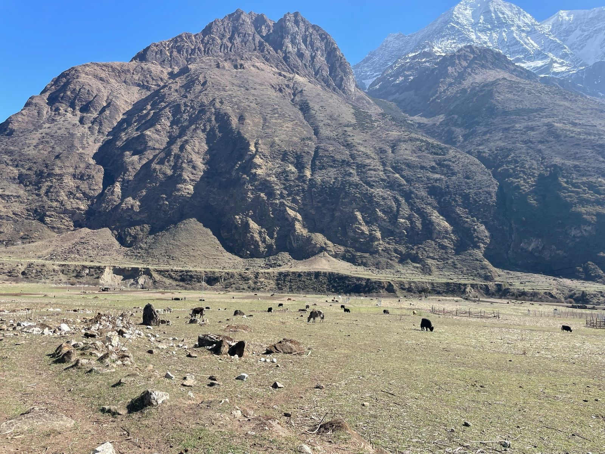
Yak grazing in the open, expansive high alpine valley on the trail to SamdoDay 9: Second Acclimatization & High Altitude Prep in Samdo
Active Acclimatization Hike along Ancient Tibetan Trading Route – 4,200 m (13,779 ft)
To guarantee peak physical condition and maximum comfort for crossing the 5,106 m Larkya La Pass, our itinerary includes a second structured acclimatization stage in Samdo. Today's half-day excursion ascends the northern ridge behind the village, following part of the historic trans-Himalayan trade trail leading toward the Tibetan border at Lajyung La (5,098 m). As we gain altitude to approximately 4,200 m, spectacular panoramas open up encompassing Simnang Himal, Samdo Peak (Pangphuchhe), Mount Manaslu, and the expansive Larkya Glacier system. This moderate walk stimulates oxygenation and red blood cell production while keeping energy reserves fully intact. After descending back to Samdo for hot lunch, your guide conducts a thorough gear check (microspikes, warm layers, headlamps) in preparation for the high pass.
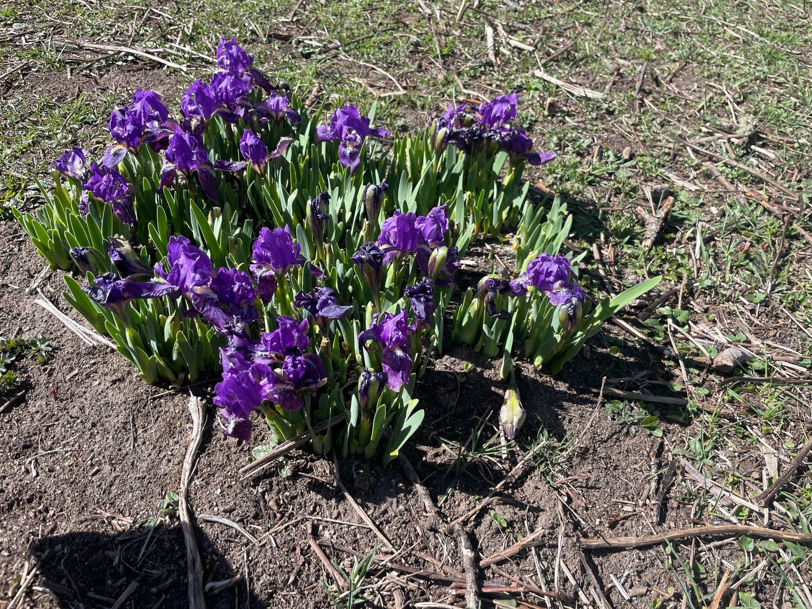
Alpine flora and sweeping mountain ridges surrounding Samdo settlementDay 10: Trek from Samdo to Dharamsala (Larkya Phedi)
Ascent to High Base Camp & Gateway to the High Pass – 4,460 m (14,632 ft)
We depart Samdo on a gradual climb, passing the ancient ruins of Larkya Bazaar, an open-air seasonal market where Tibetan and Nepalese salt merchants historically traded goods. We descend to cross the wooden bridge over the Athahra Saya Khola before beginning a steady, continuous ascent alongside the lateral moraine of Larkya Glacier. The vegetation dwindles to sparse alpine tundra and rocky scree, with glacial streams freezing in the shadows. A final push brings us to Dharamsala (Larkya Phedi) at 4,460 m. Dharamsala is an austere, high-altitude seasonal shelter designed strictly for pre-pass acclimatization and overnight rest. We arrive early in the afternoon to eat a hearty carbohydrate-rich meal, hydrate thoroughly, organize summit packs, and sleep early for the pre-dawn pass crossing.
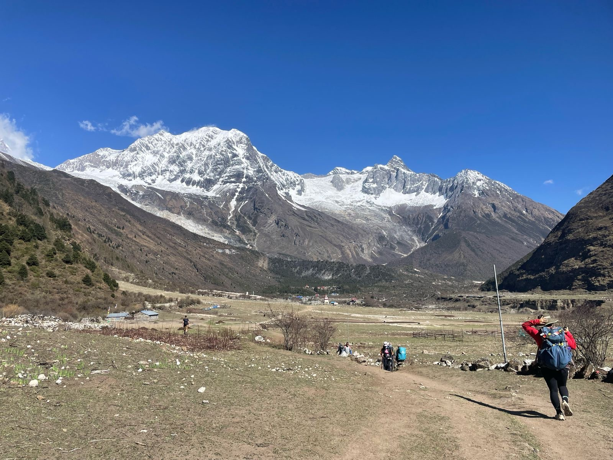
Trekker walking across high-altitude barren terrain approaching DharamsalaDay 11: Cross Larkya La Pass (5,106 m) & Descend to Bimthang
The Summit Day & Dramatic Alpine Descent into Marsyangdi – 5,106 m (16,752 ft)
The definitive crux and highlight of the entire Manaslu Circuit Trek. We begin in the freezing darkness between 3:30 AM and 4:30 AM with headlamps illuminating the frozen moraine path. The trail climbs steadily over rocky lateral ridges and frozen glacial basins, passing four small frozen lakes before ascending the final snowy ridge to Larkya La Pass at 5,106 m (16,752 ft). Standing amidst thousands of fluttering Buddhist prayer flags at sunrise, you are rewarded with one of the greatest mountain panoramas in the Himalayas: Himlung Himal (7,126 m), Cheo Himal, Kang Guru (6,981 m), Gyaji Kang, and the towering northeast face of Annapurna II (7,937 m). From the pass, a steep, knee-jarring descent over loose scree and snow leads down into the tranquil cirque of Bimthang (3,720 m), where comfortable lodges, hot showers, and celebratory dinners await.
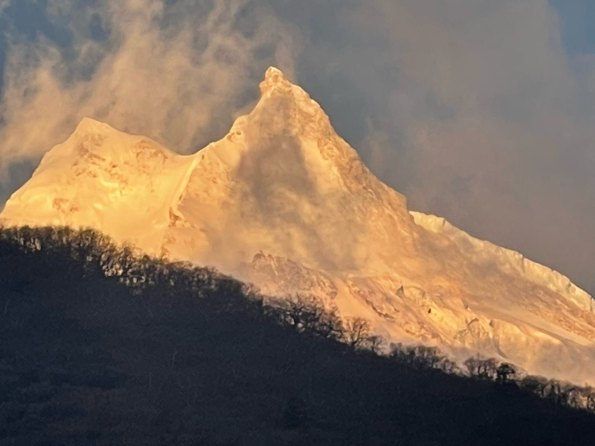
Prayer flags fluttering in icy winds on the summit ridge of Larkya La Pass at 5,106 mDay 12: Trek from Bimthang to Tilije via Gho
Descent through Ancient Rhododendron & Pine Woodlands – 3,720 m down to 2,300 m
Awaking in Bimthang to the majestic southern amphitheater of Manaslu and Phungi Himal, we begin a long, deeply satisfying descent through changing ecological zones. Leaving the high glacial cirque, we enter magnificent old-growth forests of Himalayan pine, fir, and giant rhododendrons blooming profusely in spring. Following the course of the crystal-clear Dudh Khola, the trail crosses several wooden footbridges and passes through Kharche (2,700 m) and the peaceful settlement of Gho (2,560 m). Breathing becomes effortless as atmospheric oxygen increases with every descending kilometer. A gentle afternoon walk through cultivated terraces of maize, potatoes, and barley brings us into Tilije (2,300 m), a culturally rich Gurung and Bhotia village renowned for its stone architecture and apple orchards.
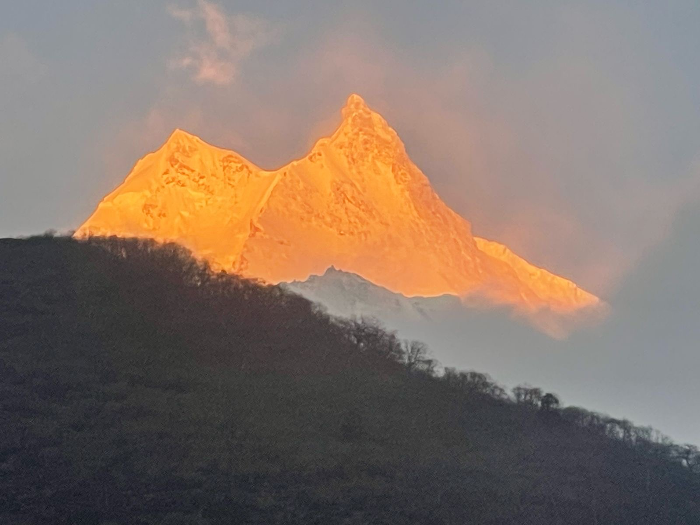
Magnificent alpine morning light illuminating lush pine valleys below BimthangDay 13: Trek from Tilije to Dharapani & Drive to Besisahar
Marsyangdi Confluence, Annapurna Connection & Road Corridor – 2,300 m down to 760 m
On our final morning of foot trekking, we cross the Dudh Khola over a suspension bridge and descend through Thonje village before crossing the Marsyangdi River into Dharapani at 1,860 m. Dharapani is the major intersection where the Manaslu Circuit connects with the classic Annapurna Circuit trekking route. Here, we complete our official exit check with the Annapurna Conservation Area (ACAP) and police authorities, concluding the walking portion of our expedition. We board our pre-arranged 4WD mountain jeep for an exhilarating drive south along the dramatic Marsyangdi river valley road, passing through Tal, Chamje, and Syange waterfalls before arriving at Besisahar (760 m), the bustling commercial district headquarters of Lamjung.
Day 14: Drive from Besisahar back to Kathmandu
Return to Capital & Farewell Celebration – 1,400 m (4,593 ft)
Following a relaxed breakfast at your hotel in Besisahar, we begin the scenic overland return journey to Kathmandu. The paved highway follows the Marsyangdi River to Dumre before joining the Prithvi Highway alongside the roaring Trishuli River, passing through vibrant roadside markets, lively towns, and river canyons. We stop for lunch at a riverside restaurant before climbing out of the river valley via the Nagdhunga Pass back into the Kathmandu Valley. Arriving back at your hotel in Kathmandu in the mid-to-late afternoon, you can enjoy a hot shower, rest, and celebrate the triumphant completion of your 14-day Manaslu Circuit circumnavigation. Evening farewell dinner hosted by our team.
What is Included in Manaslu Circuit Trek
Our 14-day package brings together every official permit, transportation leg, teahouse stay, and mountain safety service required for a seamless and safe circumnavigation of Mount Manaslu.
Manaslu Restricted Area Permit (RAP)
Official Department of Immigration restricted area permit covering Chumnubri Rural Municipality wards 1 to 4 for the required circuit duration.
Manaslu Conservation Area Permit (MCAP)
National Trust for Nature Conservation (NTNC) entry authorization for the Manaslu protected zone.
Annapurna Conservation Area Permit (ACAP)
Required protected area entry for the standard circuit exit corridor passing through Dharapani.
Agency-Issued TIMS Registration Card
Official electronic Trekkers' Information Management System card with verified QR code tracking.
Licensed Himalayan Trekking Guide
Government-certified, English-speaking local mountain guide trained in wilderness first aid and high-altitude safety (mandatory under NTB regulations).
Professional Porter Support
Experienced local porters (1 porter for 2 trekkers, maximum 22–25 kg total) to transport main expedition duffel bags.
Overland Ground Transportation
Kathmandu to Machha Khola and Besisahar to Kathmandu via comfortable private 4WD jeep or shared tourist service.
13 Nights Teahouse Accommodation
Carefully selected mountain teahouses and lodges along the route (twin-share basis with warm dining halls).
Full Board Meals on Trek
3 freshly cooked, hearty meals daily (Breakfast, Lunch, Dinner) with seasonal fruit and a cup of hot tea/coffee per meal.
Daily Health & SpO2 Monitoring
Pulse oximeter checks conducted morning and evening to evaluate oxygen saturation and resting pulse rates.
Wilderness First Aid & Oxygen Protocol
Comprehensive first aid kit with high-altitude emergency medications and established helicopter evacuation protocols.
Taxes & Official Agency Charges
All local government charges, VAT (13%), and official company operating service fees included.
What is Excluded in Manaslu Circuit Trek
Transparent pricing is a foundational principle at Namaste Hiking Trek. Below are personal expenses, optional services, and individual travel preparations not covered in the package rate.
International Airfares & Visa
Round-trip international flights to Kathmandu and Nepal tourist entry visa ($30 for 15 days, $50 for 30 days).
Mandatory Travel Insurance
Policy covering high-altitude trekking up to 5,200 m, emergency medical treatment, and emergency helicopter evacuation.
Personal Trekking Equipment
Four-season sleeping bag (-15°C to -20°C rated), heavy down jacket, broken-in trekking boots, microspikes, and daypack.
Teahouse Incidentals & Amenities
Hot showers ($2–$5), electronic device charging ($1–$4), and Wi-Fi cards ($2–$5) where available in lodges.
Beverages & Extra Snacks
Bottled mineral water, soft drinks, alcoholic beverages, espresso coffees, bakery items, and personal snacks.
Personal Medication & Expenses
Personal prescription medications, laundry services, souvenirs, and personal telephone calls.
Gratuities & Tips
Tips for trekking guides, porters, and drivers (customary recognition for good service in Himalayan trekking).
Unforeseen Emergency Expenses
Costs arising from landslides, weather roadblocks, route diversions, or early descent beyond agency control.
Booking Dates & Availability for Manaslu Circuit Trek
| Dates | Days | Status | Price / person | Action |
|---|---|---|---|---|
|
Sep 12 - Sep 25, 2026
Autumn Prime Season
|
14 Days | Guaranteed | $1,299 | |
|
Sep 26 - Oct 09, 2026
Peak Autumn Clarity
|
14 Days | Filling Fast | $1,299 | |
|
Oct 05 - Oct 18, 2026
Optimal Mountain Views
|
14 Days | Only 3 Seats | $1,299 | |
|
Oct 19 - Nov 01, 2026
Clear Blue Skies
|
14 Days | Guaranteed | $1,299 | |
|
Nov 03 - Nov 16, 2026
Late Autumn Crisp Trails
|
14 Days | Guaranteed | $1,249 | |
|
Mar 15 - Mar 28, 2027
Spring Awakening
|
14 Days | Open | $1,249 | |
|
Apr 06 - Apr 19, 2027
Rhododendron Bloom
|
14 Days | Guaranteed | $1,299 |
Packing List for Manaslu Circuit Trek
Read before you book, Manaslu Circuit Trek
To ensure you are thoroughly prepared for the 14-day Manaslu Circuit, our mountain experts have compiled detailed operational guidance on route stages, altitude adaptation, pass day execution, government permits, and teahouse living.
If you have any questions or wish to customize this route, feel free to email or WhatsApp us. Our team is available 24/7 to support your trip planning.
Stage-by-Stage Route & Landscape Progression
The complete circuit can be divided into five distinct geographical stages:
• Stage 1: Lower Budhi Gandaki (Machha Khola to Deng, ~900 m to 1,860 m): Warm, subtropical river gorges, cascading waterfalls, terraced rice paddies, suspension bridges, and cliffside trails.
• Stage 2: Middle Valley Approach (Deng to Lho, ~1,860 m to 3,180 m): Transition into cooler temperate forests of oak, pine, and rhododendron, opening into broader valleys with initial views of Manaslu North and Peak 29.
• Stage 3: Upper Manaslu & Nubri (Lho to Samdo, ~3,180 m to 3,860 m): The Tibetan Buddhist heartland of Nubri. Open glacial valleys, extensive mani walls, Ribung and Pungyen Gompas, yak pastures, and dramatic panoramas of Mount Manaslu (8,163 m).
• Stage 4: Larkya La High Pass Crossing (Samdo to Bimthang via Larkya La, ~3,860 m to 5,106 m, down to 3,720 m): Barren alpine tundra, glacial moraine, frozen tarns, high pass crossing, and vast vistas of Himlung, Kang Guru, and Annapurna II.
• Stage 5: Marsyangdi Exit (Bimthang to Dharapani & Besisahar, ~3,720 m down to 760 m): Rapid descent through pristine rhododendron and pine forests along the Dudh Khola, connecting with the Marsyangdi River road corridor.
Distance, Daily Walking Hours & Trail Terrain
However, distance alone does not determine difficulty. A relatively short stage above 4,000 m (such as Samagaon to Samdo, 8.5 km in 3–4 hrs) can require more physical effort than a longer stage at lower altitude because of reduced atmospheric oxygen.
• The Longest Day: The crossing from Dharamsala over Larkya La (5,106 m) to Bimthang covers approximately 17–20 km and requires 8 to 11+ hours. It combines an early pre-dawn alpine ascent with a long 1,400–1,500 m descent over rocky moraine and loose scree.
• Trail Surfaces: Lower sections feature stone steps, dirt paths, and suspension bridges. Middle sections include stone-paved village paths and forest tracks. Upper sections feature glacial moraine, loose shale, frozen snowfields, and rocky high-altitude ridges where surefootedness is paramount.
Altitude Profile & Vertical Acclimatization Strategy
Our 14-day itinerary incorporates a proven two-stage acclimatization structure to ensure safe physiological adaptation:
• First Acclimatization Stop: Samagaon (3,530 m): Trekkers spend two nights here. An active day hike to Birendra Glacier Lake (3,450 m) or Pungyen Gompa (4,050 m) adheres to the golden mountaineering principle of 'climb high, sleep low'.
• Second Acclimatization Stop: Samdo (3,860 m): An additional active half-day excursion up to ~4,200 m along the Tibetan border trail allows your body to adjust to thin air before proceeding to the 4,460 m high camp at Dharamsala.
• Sleeping Altitude vs. Maximum Daytime Altitude: The highest overnight stay is at Dharamsala (4,460 m). The maximum altitude of 5,106 m at Larkya La is crossed during daytime, followed immediately by a rapid descent to Bimthang (3,720 m), which greatly aids recovery.
Trek Difficulty, Physical Demands & Fitness Preparation
• Non-Technical Nature: The standard circuit does not require technical mountaineering skills, ropes, or ice axes. However, 'non-technical' must not be confused with 'easy'. You must be prepared for steep ascents, rocky moraines, freezing high-pass conditions, and knee-jarring descents.
• Recommended Physical Preparation: Begin training 8 to 12 weeks before departure. Focus on:
1. Cardiovascular endurance: Brisk uphill walking, stair climbing, cycling, or jogging 3–4 times weekly.
2. Leg & Core Strength: Squats, lunges, step-ups, and planks to prepare your knees and ankles for prolonged downhill strain.
3. Back-to-Back Hiking: Complete weekend hikes of 5–7 hours carrying an 8–10 kg daypack to condition your body for consecutive trekking days with minimal recovery time.
Crossing Larkya La Pass (5,106 m): What to Expect on Crux Day
• Pre-Dawn Departure: You will wake at 3:30 AM in Dharamsala, have a warm breakfast, and begin hiking by 4:00 AM with headlamps. Starting early provides maximum daylight and allows the party to cross the pass before high-altitude afternoon winds and clouds develop.
• The Ascent: The trail climbs steadily over frozen lateral moraines of Larkya Glacier. Depending on the season, snow and patches of black ice may require slip-on microspikes. Pacing should be slow, rhythmic, and synchronized with steady breathing.
• At the Summit: The pass is marked by a massive cairn draped with prayer flags. The view encompasses Manaslu North, Himlung Himal, Cheo Himal, and Annapurna II.
• The Demanding Descent: The descent from 5,106 m down to Bimthang at 3,720 m is a steep drop of nearly 1,400 meters over loose scree and rocky switchbacks. Trekking poles and controlled foot placement are essential to protect your knees.
Best Seasons, Month-by-Month Weather & Climate Zones
• Autumn (September, October, November) — The Premier Choice: September marks the post-monsoon transition with lush green valleys. October delivers the clearest skies, stable weather, and superb mountain visibility. November brings crisp, dry air with colder nights (down to -8°C at high camp).
• Spring (March, April, May) — Flowering Flora & Warming Trails: March is crisp with lingering high-altitude snow. April is ideal with vibrant rhododendron blooms and comfortable daytime temperatures. May is warmer with longer days, though pre-monsoon afternoon clouds can form.
• Monsoon / Summer (June to August): Characterized by heavy rainfall in the lower Budhi Gandaki gorge, risk of landslides, slippery trails, leeches, and cloud-obscured peaks. Not recommended for standard itineraries.
• Winter (December to February): Severe cold with sub-zero temperatures (down to -20°C at Dharamsala) and heavy snowfall. Larkya La Pass can become impassable, and teahouses above Samdo generally close.
Official Permits, Government Regulations & Guide Mandate
• 1. Manaslu Restricted Area Permit (RAP): Administered by the Nepal Department of Immigration. Seasonal pricing: USD 100 for the first 7 days plus USD 15 per additional day during Autumn (Sep–Nov); USD 75 for the first 7 days plus USD 10 per additional day during Dec–Aug.
• 2. Manaslu Conservation Area Permit (MCAP): NPR 3,000 for foreign visitors (NPR 1,000 for SAARC nationals).
• 3. Annapurna Conservation Area Permit (ACAP): NPR 3,000 for foreign visitors. Required because the circuit exits into the Annapurna Conservation Area at Dharapani.
• 4. TIMS Card: NPR 2,000 agency-issued electronic card with verified QR code tracking.
• Mandatory Licensed Guide: Under Nepal Tourism Board (NTB) and Department of Immigration regulations, solo or independent trekking without a licensed guide is strictly prohibited in the Manaslu region. All permits must be processed through a registered Nepalese trekking agency.
Cost, Pricing Transparency & Personal On-Trek Budgeting
• What is Covered in a Professional Package: All four government permits (RAP, MCAP, ACAP, TIMS), certified guide and porter salaries, transport between Kathmandu and trailheads, 13 nights teahouse lodging, and 3 meals daily on trek.
• Personal On-Trek Budgeting: We recommend carrying approximately NPR 25,000 to 35,000 in cash (approx. USD $200–$270) in Nepalese Rupees from Kathmandu. There are no functioning ATMs anywhere between Arughat and Besisahar.
• Typical Teahouse Extra Expenses:
- Hot bucket shower: NPR 300 – 600
- Device / power bank charging: NPR 200 – 500
- Wi-Fi card / access: NPR 300 – 600
- Boiled drinking water (1L): NPR 150 – 400
- Bakery treats, sodas, and chocolate bars: NPR 250 – 500
Teahouse Living, Lodges & Amenities in Upper Nubri
• Rooms: Typically twin-share rooms featuring two single wooden beds, foam mattresses, clean sheets, and pillows. Rooms are unheated; bringing a high-quality 4-season sleeping bag (-15°C rated) is essential for sub-zero nights in Samdo and Dharamsala.
• Dining Halls: The social center of every teahouse is the communal dining room, which is heated every evening by a central cast-iron stove burning dried wood or yak dung. It is warm, welcoming, and perfect for reading, journaling, and enjoying hot meals.
• Bathrooms & Toilets: Lower settlements may offer western flush toilets and attached bathrooms in select rooms. In higher settlements (Lho, Samagaon, Samdo, Dharamsala), shared squat-style toilets are standard. Always carry your own toilet paper and hand sanitizer.
Food, Nutrition & Safe Drinking Water Management
• The Himalayan Fuel — Dal Bhat: The traditional Nepalese staple of steamed white rice, spiced lentil soup (dal), seasonal vegetable curry (tarkari), and pickled greens (saag) is freshly prepared twice daily. It comes with unlimited free refills and provides the optimal balance of complex carbs, protein, and minerals.
• Other Menu Varieties: Teahouse menus also feature Tibetan bread, tsampa porridge, noodle soups (thukpa), fried rice, potato dishes, momo dumplings, and porridge with honey.
• Safe Drinking Water: Drink 3 to 4 liters of fluid daily to prevent dehydration and AMS. To preserve the fragile ecology of the Manaslu Conservation Area, single-use plastic water bottles are discouraged. Carry two 1-liter reusable insulated bottles and treat water using Katadyn/Aquatabs purification tablets or a portable filter.
Group Joining vs. Private Guided Trekking Departures
• Group Joining Departures: Ideal for solo travelers and pairs seeking social camaraderie with fellow international adventurers. Group sizes are capped at 8–10 trekkers to maintain high safety standards, personalized guide attention, and manageable lodge dynamics.
• Private Guided Departures: Recommended for families, clubs, or travelers who prioritize complete itinerary flexibility. With a private trek, you control the daily walking pace, departure dates, rest stop durations, and can easily customize side excursions (such as visiting Manaslu Base Camp or Pungyen Gompa).
• Pacing & Safety: Whether in a group or private trek, our guides strictly adhere to safety protocols, daily pulse oximeter monitoring, and emergency communication systems.
Route Extensions: Tsum Valley & Annapurna Circuit Connection
• Tsum Valley Extension (Add 5–7 Days): Branching northeast from Lokpa below Deng, the sacred Tsum Valley ('Beyul Kyimolang') is an ancient sanctuary of non-violence where no animals are slaughtered. It features ancient nunneries like Mu Gompa and Rachen Gompa, Milarepa's meditation cave, and deep Tibetan cultural traditions. Note: Requires a separate Tsum Valley RAP (USD 40/week in autumn).
• Annapurna Circuit Continuation: Rather than boarding a vehicle at Dharapani, ambitious trekkers can continue hiking up the Marsyangdi Valley into Manang, crossing the famed Thorong La Pass (5,416 m) down to Muktinath and Jomsom.
• Manaslu Base Camp (4,400 m): Can be incorporated directly into the Samagaon acclimatization day as a vigorous 7–8 hour day hike to touch the edge of the active mountaineering expedition base camp.
Altitude Profile of Manaslu Circuit Trek
Interactive elevation chart illustrating the progressive daily gain from Machha Khola (900 m) to the summit of Larkya La Pass (5,106 m) and the subsequent descent to Dharapani.
Himalayan High-Altitude Safety Guidelines
1. Climb High, Sleep Low: Participate in active afternoon hikes during your rest days in Samagaon (3,530 m) and Samdo (3,860 m).
2. Hydration Target: Consume a minimum of 3.5 to 4 liters of purified water daily to facilitate oxygen delivery to your tissues.
3. Pacing & Rest: Walk at a rhythm where you can comfortably maintain a conversation without gasping for breath.
4. Never Conceal Symptoms: Report any headache, nausea, or dizziness to your guide immediately.
Weather & Best Seasons on Manaslu Circuit
Because the circuit crosses five climatic zones—from subtropical river gorges at 900 m to arctic conditions at 5,106 m—temperatures and trail conditions vary drastically. Explore seasonal climate patterns below.
Autumn (Sep – Nov)
PEAK SEASONOptimal post-monsoon visibility, crisp blue skies, and dry, stable trails. October delivers the clearest Himalayan panoramas.
Night Temp: -4°C to -10°C (High Camp)
Rainfall: Very Low
Spring (Mar – May)
FLOWER BLOOMVibrant red and pink rhododendrons line the middle forests. Days become progressively warmer with longer daylight hours.
Night Temp: -6°C to -12°C (High Camp)
Rainfall: Low to Moderate
Summer / Monsoon (Jun – Aug)
WET / QUIETHeavy rains in lower river gorges, high risk of landslides, muddy paths, and leeches. Mountain summits frequently obscured by clouds.
Night Temp: 2°C to 8°C (High Camp)
Rainfall: High
Winter (Dec – Feb)
SUB-ZERO COLDDeep snow blankets Larkya La Pass, which can become impassable. Teahouses in Samdo and Dharamsala frequently shut for the season.
Night Temp: -15°C to -22°C (High Camp)
Rainfall: Low (Frequent Snow)
Manaslu Circuit Trek Map & Route Profile
Book Your Manaslu Circuit Trek
We offer guaranteed fixed group departures throughout spring and autumn, as well as customized private itineraries. Submit your details below and our mountain travel specialists will prepare your itemized quotation and permit schedule within 24 hours.
What Our Manaslu Trekkers Say
Authentic feedback and verified stories from travelers who have circumnavigated Mount Manaslu with our expert team.
Unforgettable Larkya La Crossing at Sunrise!
"The Manaslu Circuit exceeded all our expectations. Having two acclimatization days in Samagaon and Samdo made a huge difference—we reached the 5,106 m pass feeling strong and completely clearheaded. Our guide Pasang was extraordinarily attentive, checking our oxygen levels twice daily and sharing the rich Buddhist culture of Nubri. Truly a life-changing adventure."
Way More Authentic Than Annapurna or EBC
"We were looking for a remote, uncrowded Himalayan circuit, and Manaslu was the perfect choice. The dramatic suspension bridges over the Budhi Gandaki gorge are breathtaking, and walking through ancient stone villages surrounded by mani walls felt like stepping back in time. Namaste Hiking Trek handled the restricted permits seamlessly."
Frequently Asked Questions for Manaslu Circuit Trek
You Might Also Like
Explore other classic Himalayan circuits and remote wilderness journeys in Nepal.